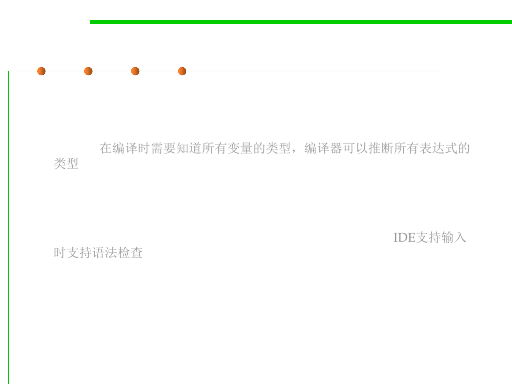

3.1 Data Type and Type Checking
Static Typing vs. Dynamic Typing
▪ Java is a statically-typed language.
– The types of all variables are known at compile time (before the program
runs), and the compiler can therefore deduce the types of all expressions
as well. 在编译时需要知道所有变量的类型，编译器可以推断所有表达式的
类型
– If a and b are declared as int, then the compiler concludes that a+b is
also an int .
– The Eclipse environment does this while you’re writing the code, in fact,
so you find out about many errors while you’re still typing. IDE支持输入
时支持语法检查
▪ In dynamically-typed languages like Python, this kind of checking
is deferred until runtime (while the program is running).